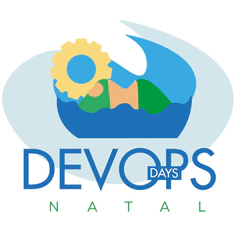
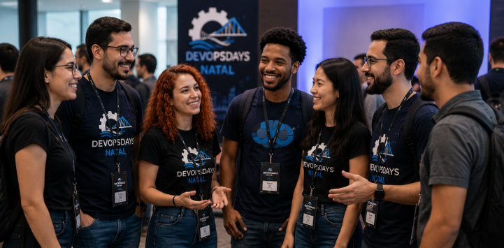

Sobre o evento

O DevOpsDays Natal é um evento voltado para profissionais, estudantes e entusiastas da tecnologia que desejam aprender mais sobre cultura DevOps, computação em nuvem, automação, segurança, integração contínua e desenvolvimento de software moderno. Inspirado na comunidade internacional, o encontro reúne palestras, workshops e momentos de networking, promovendo a troca de experiências entre desenvolvedores, analistas, engenheiros de software e especialistas em infraestrutura.
Quem pode participar?
O DevOpsDays Natal é aberto para todas as pessoas interessadas em tecnologia e inovação. O evento foi pensado tanto para profissionais experientes quanto para iniciantes que desejam aprender mais sobre o universo DevOps e desenvolvimento de software. Estudantes, programadores, analistas de sistemas, administradores de redes, profissionais de segurança da informação, designers, gestores de projetos e entusiastas da área de TI são muito bem-vindos.

Como se inscrever?
Para participar do DevOpsDays Natal, os interessados devem acessar o site oficial do evento e preencher o formulário de inscrição com informações básicas, como nome, e-mail e área de atuação. Após concluir o cadastro, o participante receberá uma confirmação por e-mail contendo detalhes sobre a programação, horários das atividades e orientações gerais para o dia do evento. As vagas são limitadas, por isso é recomendado realizar a inscrição com antecedência para garantir participação nas palestras, workshops e demais atividades oferecidas.